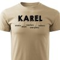

Technik a IT specialista
Diskord: Karel F.
Email: xx@a.cz
Pracuji v IT, svoji kariéru jsem zahájil v telekomunikačních technologiích a jsem spokojený. Ve volném čase se zabývám technologiemi obecně a rád trávím volný čas na horách.
| Vzdělání: | |
|---|---|
| ČVUT - FEL obor telekomunikace | 2000 - 2007 |
| SPŠ Inf. Technologií Česká Třebová | 1994 - 1996 |
| SPŠE Pardubice, obor telekomunikace | 1988 - 1992 |
Zodpovědnost za chod fakturačního systému včetně implementace nových verzí a návrhu architektury komunikace mezi systémy
Zodpovědnost za funkční a penetrační testy
Zodpovědnost údržbu telefonních zařízení na území okresu.
Zodpovědnost za údržbu telefonních ústředen
Od audia po fotovoltaické elektrárny.
Provoz několika www prezentací od čistého HTLM po systémy pro správu obsahu. Dále základní znalosti OS Linux na úrovni být schopen provozoval vlastní zabezpečený server na kterém webové prezentace běží.
Od bastlení po opravy domáchích spotřebičů.